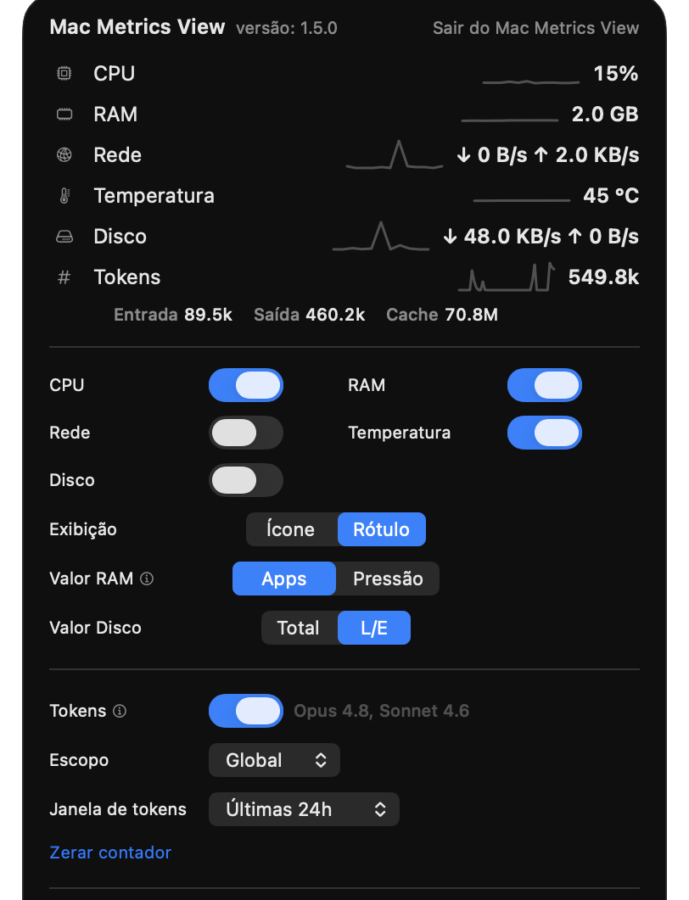

Tokens do Codex (ChatGPT)
Além do Claude Code, o Mac Metrics View lê os logs locais do Codex (ChatGPT) em ~/.codex/sessions e mostra o consumo do provedor que você escolher.
Versão 1.6 para macOS
Um app nativo e compacto para entender a pressão do seu Mac sem abrir o Monitor de Atividade.
Sem conta. Sem telemetria. Leitura local dos indicadores do sistema.


Versão 1.6
Além do Claude Code, o Mac Metrics View lê os logs locais do Codex (ChatGPT) em ~/.codex/sessions e mostra o consumo do provedor que você escolher.
Um seletor no popover de tokens alterna entre Claude Code e Codex na hora. A barra de menus e o rótulo se ajustam ao provedor escolhido, e a seleção fica salva.
Uma linha de raciocínio (reasoning) para os modelos que reportam, com os nomes dos modelos da OpenAI ao lado. Tudo lido localmente; nada sai do seu Mac.
Versão 1.5

Acompanhe o consumo de tokens do Claude Code na barra de menus e no popover, com total, entrada, saída e cache, além de um mini-gráfico do uso recente.
Veja quais modelos entraram na conta — como Opus 4.8 e Sonnet 4.6 — ao lado do botão de ativação. A leitura vem dos logs locais do Claude Code; nada sai do seu Mac.
Conte por sessão, projeto ou tudo, e escolha a janela — hoje, última hora, 24h ou desde o último reset. Zere o contador quando quiser.
Versão 1.4
Layout mais enxuto, com todas as métricas sempre visíveis — cada uma em uma linha, com mini-gráfico e valor. A configuração fica logo abaixo, sem rolagem.
Rede em formato compacto, métricas agrupadas com respiro e a cor de severidade só no valor — fica mais fácil ler de relance.
Os botões agora só decidem o que vai para a barra; o popover mostra tudo. Escolha o valor de RAM e disco, e a primeira execução já começa com CPU, RAM e temperatura.
Versão 1.3
Como a luz do HD dos PCs antigos: um LED na barra que muda de cor conforme o SSD trabalha — apagado em repouso, verde, amarelo e vermelho conforme a carga de leitura e escrita.
No popover, veja as taxas de leitura e escrita ao vivo, com totais e picos recentes. Escolha mostrar o total combinado ou leitura e escrita separadas na barra. Tudo local, só o disco de inicialização.
Versão 1.0
Trave teclado e trackpad por 15s a 5min para limpar a tela sem disparar cliques ou teclas. Requer permissão de Acessibilidade do macOS.
Ative no popover para o Mac Metrics View abrir sozinho ao iniciar a sessão no macOS. Reversível a qualquer momento.
A interface acompanha o idioma do sistema, em português ou inglês, sem configuração manual.
Feito para ficar quieto
Veja CPU, RAM, rede, temperatura e disco perto do relógio do macOS, com indicadores curtos e fáceis de escanear.
Clique no indicador para ver todas as métricas com mini-gráficos e detalhes recentes — sempre completo, não importa o que está na barra.
Os botões definem o que aparece na barra de menus. O popover continua mostrando todas as métricas, então nada para de ser coletado.
Acompanhe a temperatura em °C com cor por estado térmico — normal, elevada ou alta — na barra ou no popover.
Escolha o valor de RAM (Apps ou Pressão) e de disco (total ou leitura/escrita), e exiba a barra com ícones ou rótulos.
Interface discreta, responsiva a claro e escuro, pensada para parecer parte do sistema.
O app verifica novas versões e instala atualizações assinadas no lugar, sem precisar voltar aqui. Você decide quando instalar, e os updates não disparam o aviso do Gatekeeper de novo.
Privacidade primeiro
O Mac Metrics View lê CPU, memória e contadores locais de rede. Ele não exige login, não envia telemetria e não depende de serviços externos para funcionar.
Download
Versão 1.6 para macOS (Apple Silicon). Na primeira abertura, o macOS pode pedir confirmação por ser um app ainda não notarizado — depois disso, o app se mantém atualizado sozinho.
Primeira abertura
Como o app ainda não é notarizado pela Apple, o macOS bloqueia a primeira execução por precaução — não é um erro nem sinal de malware. Libere o app uma única vez assim:
No aviso, escolha “OK” — nunca “Mover para o Lixo”. Isso apenas fecha o alerta sem apagar o app.
Em Ajustes do Sistema → Privacidade e Segurança, role até “MacMetricsView foi bloqueado” e clique em “Abrir Mesmo Assim”.
Autentique com Touch ID ou senha e clique em “Abrir”. Só é preciso fazer isso uma vez.
No macOS Ventura ou anterior: clique com o botão direito (ou Control+clique) no app e escolha “Abrir” — pule os passos 2 e 3 acima.
Isso só vale para esta primeira instalação manual. As próximas versões chegam pelo próprio app, com atualizações assinadas que não disparam o Gatekeeper de novo.